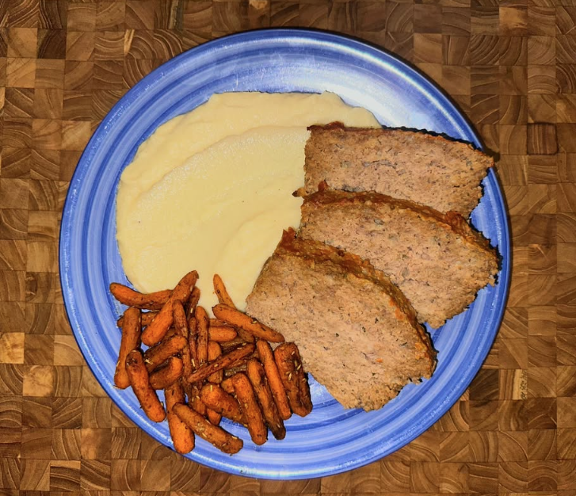

Momma's Meatloaf

Ingredients
Ground Beef or Turkey
Onion
Garlic
Breadcrumbs
Tomato Sauce
Egg
Worcestershire Sauce
Salt & Pepper
Glaze
Ketchup (Tomato Sauce)
Brown Sugar
Grainy Mustard
Instructions
Preheat oven to 350
Dice onion and a few garlic gloves
Heat in pan over medium heat
Combine in large bowl:
1.5 lbs ground meat
1 egg
1 cup breadcrumbs (if too sticky add more)
1/2 cup tomato sauce (if too dry add more)
Splash of Worcestershire sauce
Season with salt & pepper
Mix with spatula or hands until homogenous
Mix in onion and garlic once they are translucent
Put mixture into loaf pan (can line with parchment paper for easier removal)
Mix together glaze:
1/4 cup of ketchup (or tomato sauce)
1 tbsp brown sugar
1 tbsp grainy mustard
Smooth top of mixture in loaf pan and brush liberally with glaze
Cook in oven for 60-75 minutes or until proper internal temperature